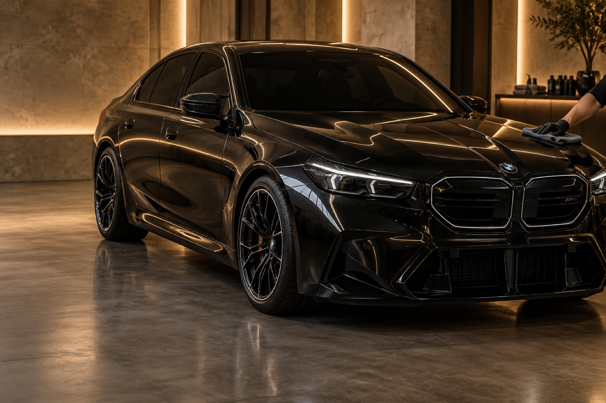
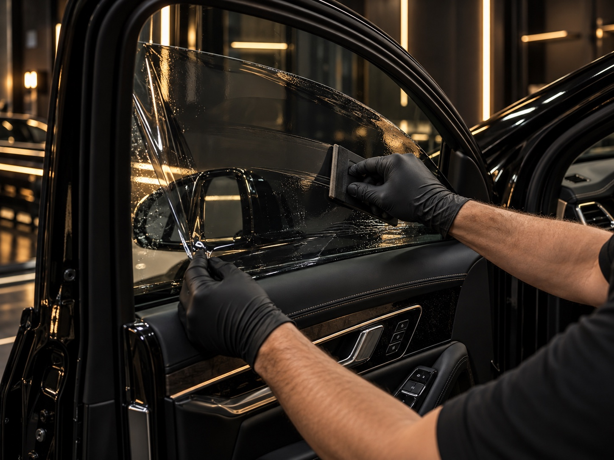

01 / ЗАЩИТА КУЗОВАSTEK
Защитная плёнка
для кузова
Прозрачная глянцевая полиуретановая плёнка. Её можно установить на зоны, которые чаще встречаются с песком и мелкими камнями, или на весь кузов.
STEK DYNOshield
FORMA DETAIL STUDIO · МОСКВА
Корректируем лак, устанавливаем защитную полиуретановую плёнку, тонируем стёкла и наносим керамическое покрытие. Сначала осмотрим автомобиль, затем согласуем объём работ.
РАБОТА С КУЗОВОМ
Сначала осмотр и разговор о задаче. Затем — подходящая технология и согласованная стоимость.
Точный состав работ зависит от состояния автомобиля и обсуждается до начала.
ПЛЁНКА И АВТОХИМИЯ
Материал подбирают под поверхность и задачу: защита от дорожного абразива, подготовка лака к полировке или регулярный уход.
Прозрачная глянцевая полиуретановая плёнка. Её можно установить на зоны, которые чаще встречаются с песком и мелкими камнями, или на весь кузов.
STEK DYNOshieldЛинейка средств для разных этапов: мойки, удаления загрязнений перед полировкой, коррекции лака и ухода за интерьером.
Каталог Koch-ChemieРоссийская линейка средств для повседневного ухода: мойки кузова, очистки колёс и стёкол, ухода за салоном.
Shine SystemsКОРРЕКЦИЯ ЛАКА · ПРИМЕР 50/50
На половине панели лак отполирован, рядом оставлен участок до обработки. Так видна разница в отражении света.
Сравнение под инспекционным светом: слева заметны следы на лаке, справа — ровное отражение после полировки.

02 / ТОНИРОВКА СТЁКОЛМастер укладывает плёнку на боковое стекло, выгоняет монтажный раствор ракелем и проверяет посадку по краям.
ОТ ЗАЯВКИ ДО ВЫДАЧИ
Путь автомобиля по шагам: фиксируем исходное состояние, согласуем план и показываем, что было сделано.
При осмотре отмечаем сколы, царапины и участки прежнего ремонта.
Выбираем зоны и технологию, до начала фиксируем стоимость и срок.
Соблюдаем порядок подготовки и обработки; ключевые этапы отмечаем в фотоотчёте.
Вместе осматриваем выполненные зоны и обсуждаем дальнейший уход.
ПЕРВЫЙ ШАГ
Оставьте контакт и выберите услугу. Марку автомобиля и детали можно добавить по желанию — если пока не определились, просто выберите консультацию.